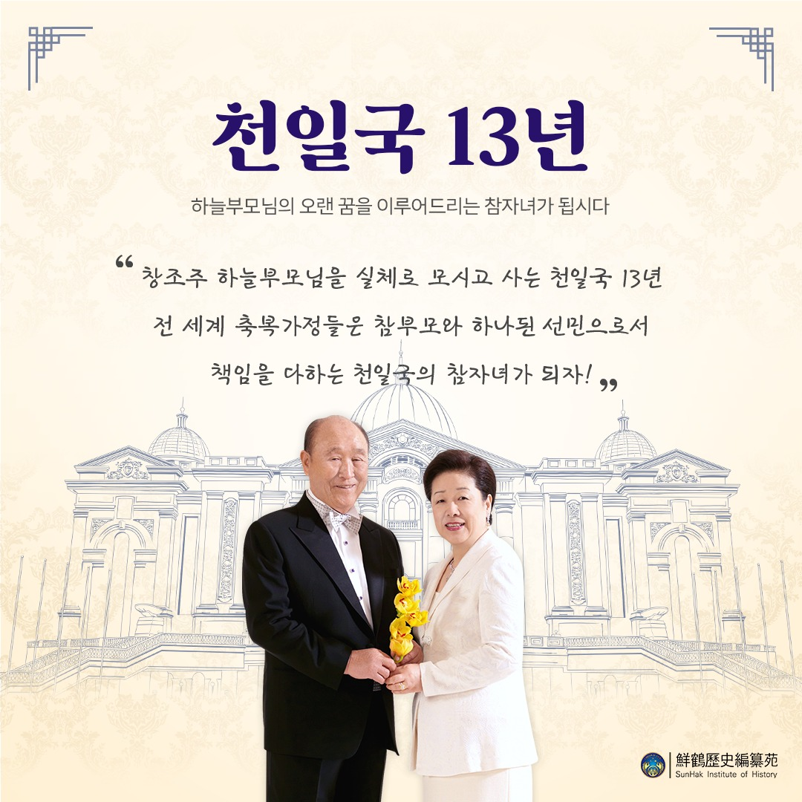
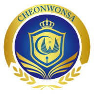
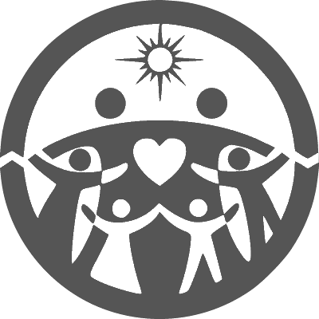
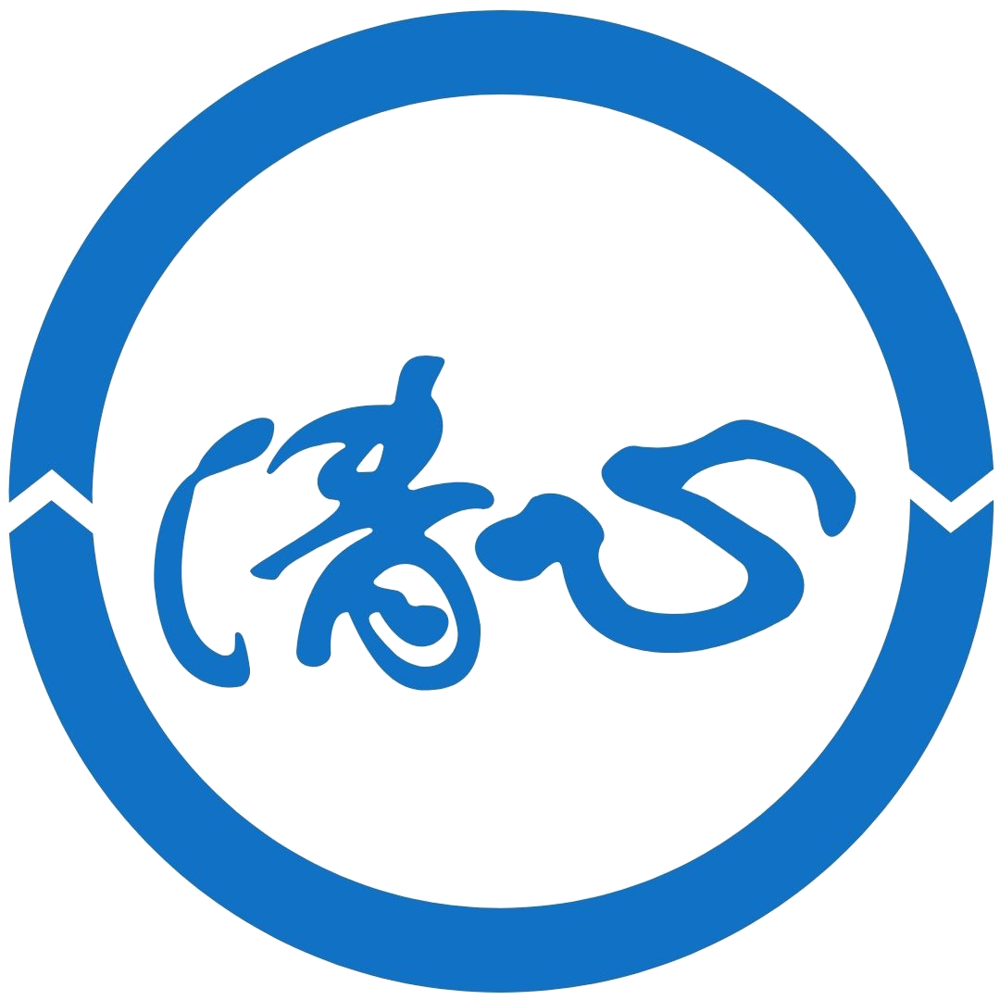

2025 연두표어
창조주 하늘부모님을 실체로 모시고 사는 천일국 13년
전세계 축복가정들은 참부모님과 하나된 선민으로서
책임을 다하는 천일국의참자녀가 되자!
인사말
안녕하세요 축복가정을 비롯한 내외귀빈 여러분. 입장하시면 우선 인사를 부탁드립니다.
이 채팅방은 일반 식구가 개설한 식구 혹은 그 외 가정연합에 대해 관심이 있는 모든 사람이 자유롭게 모여 어떠한 주제로든 이야기를 나누기 위한 목적으로 개설되었습니다.
YouTube 콘텐츠 건너뛰기소식
천원궁의 공식 SNS 채널이 오픈했어요! Instagram과 Facebook의 공식 페이지, YouTube 공식 채널, 공식 네이버 블로그와 카카오톡 플러스 친구를 통해 언제나 새로운 기쁨의 새소식을 만나보세요!
각종 바로가기 링크 목록
연관 사이트
- 하늘부모님성회 세계평화통일가정연합 한국 공식 사이트
-
내가 사는 지역의 교회 찾아보기 가정연합 공식 사이트
-  말씀교재와 존영, 신앙용품 쇼핑몰 천원사
- 우리의 성지 HJ천주천보수련원
- 역사적인 자료를 모아둔 선학역사편찬원
- 축복결혼을 위한 프로필 등록 BLESSING4U
- 세계평화통일가정연합 행정지원센터 하나로
- 평화를 디자인하라 피스 디자이너 (YSP)
- 인류의 미래를 이끌어 갈 지성인 사)세계평화청년학생연합(YSP)
- 세계평화 실현을 위한 천주평화연합
- 인류의 엄마들 세계평화여성연합
-  世界平和統一家庭連合 公式サイト
- 평화를 위한 방송 PeaceTV
- 다음 말씀 자료 카페 천일국 경전방
-
네이버 말씀 자료 카페 천일국 경전방
- 세계와 미래가 만나는 곳 선문대학교
- 애천(愛天)·애인(愛人)·애국(愛國) 선학UP대학원대학교
-  애천(愛天)·애인(愛人)·애국(愛國) 청심국제중고등학교
- 춤추고 노래하는 평화의 천사 리틀엔젤스예술단
- 효정의 가치를 공유하여 심정을 잇다 효정문화 콘텐츠 포털 이음(E-um)(효정문화원)
-
 천일국민의 예복은 여기
크리스티나 한
천일국민의 예복은 여기
크리스티나 한
- 어머님의 꿈! 남북통일! 남북통일국민운동연합
연관 유튜브 채널


유튜브 재생목록
- 인류의 눈물을 닦아주는 평화의 어머니 (여성 낭독)
- 인류의 눈물을 닦아주는 평화의 어머니 (남성 낭독)
- 평화를 사랑하는 세계인으로
- 천성경
- 평화경
- 평화신경
- 지상생활과 영계. 문선명선생 말씀 주제별정선 11
- 손대오 박사의 통일원리 입문 강좌
- 영성을 울리는[이기성 원장 1분 말씀]
- ヒーリング聖歌 安らぎの森とハープの調べ - 하프로 듣는 성가 BGM
- Chamber Orchestra Holy Song - 오케스트라로 듣는 성가 BGM
- Classical Guitar Holy Songs - 클래식 기타로 듣는 성가 BGM
- Piano Holy Song - 피아노로 듣는 성가 BGM
- Piano Arrangment Holy Song - 피아노로 듣는 성가 BGM2`
- Guitar Arrangement Holy Song - 기타로 듣는 성가 BGM
- Jazz Holy Song - 재즈로 편곡된 성가 BGM
연관기업


찾아오시는 길
하늘부모님 성회 세계평화통일가정연합 천원궁 천승교회
| 이름 | 하늘부모님성회 세계평화통일가정연합 천원궁 천승교회 |
|---|---|
| 주소 |
서울 용산구 서빙고로 39 한강로3가 63-379 |
| 대중 교통 | 4호선 경의중앙선 이촌역 1번 출구에서435m |
| 502번 400번 용산세무서에서 176m | |